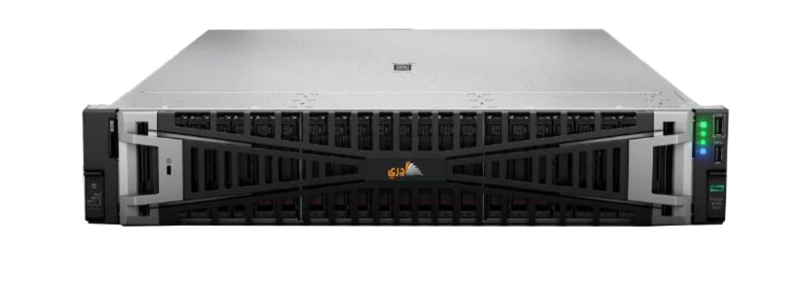

OEM Infrastructure
A Saudi Made, end-to-end agentic workforce platform deployed on HPE ProLiant DL385 Gen11 — designed for sovereign enterprise operations with data residency compliance built in.
Product
Operan Private Cloud is a pre-validated OEM appliance — the Operan agentic workforce platform shipped as a fully integrated stack on HPE ProLiant DL385 Gen11 servers. It arrives configuration-ready, not as a software license you integrate yourself, but as a deployed and tested operational unit.
HPE ProLiant DL385 Gen11 — 2-socket AMD EPYC 9004 (Turin), up to 256 cores, 6 TB DDR5. 1U rack density with PCIe Gen5 I/O. Manufactured at HPE's Saudi Arabian facility.
Full Operan platform — all 20 microservice modules, orchestrator, policy engine, observability pipeline, and Arabic-language core. Pre-integrated, pre-provisioned.
Single-unit or scale-out appliance. RACK-READY configuration with validated topology. No custom integration required — powered on and operational within days.

Certification
The DL385 Gen11 servers used in Operan Private Cloud are manufactured at HPE's Saudi Arabian production facility. Each unit carries the official Saudi Made certification seal, verified by the Saudi Productivity and Industrial Development and Logistics Authority (SPZA).
DL385 Gen11 servers assembled at HPE's Dammam production line. Final assembly, QA, and configuration performed within the Kingdom before shipment.
Saudi Made certification issued by SPZA, confirming manufacturing origin and minimum local value-add threshold per national standards.
Saudi Made certified infrastructure receives priority scoring in government procurement evaluations and qualifies for local content credit under IKTVA frameworks.
Fully sovereign stack — all compute, storage, and data processing remain within Saudi Arabia's borders. Compliant with SDAIA and NCA data governance requirements.
Government Endorsed
Operan Private Cloud is structured to meet Saudi localization requirements for enterprise IT procurement. As an end-to-end solution combining Saudi Made hardware with the Operan Saudi Made platform, it provides a clear path to compliance with local content mandates.
The program operates under the sponsorship of the Local Development Authority, aligning with the government's industrial localization strategy and Vision 2030 targets for domestic value creation.
The product's Saudi manufacturing origin, local content, and operational footprint contribute to In-Kingdom Total Value Add metrics required by government entities and major enterprise procurement programs.
Localized enterprise solutions combining Saudi Made hardware with sovereign platform software are eligible for priority listing in government and enterprise procurement channels, accelerating deployment timelines.
Supports the national agenda for technology transfer, domestic manufacturing growth, and sovereign capability development in AI-driven enterprise infrastructure — core pillars of the government's digital transformation strategy.
Request a technical briefing to review deployment specifications, architecture options, and procurement pathways for your organization.
Request Technical Briefing